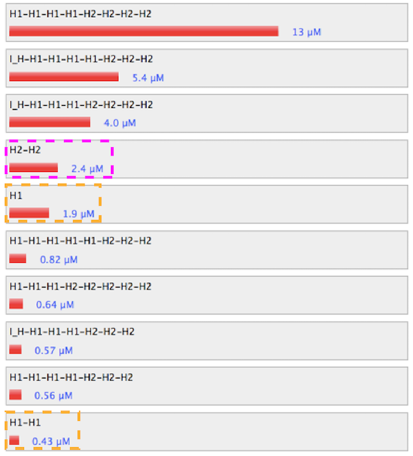
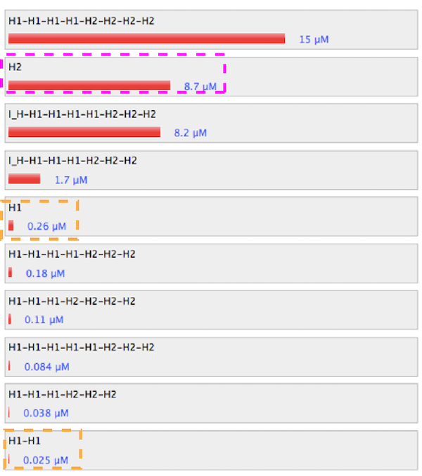

1. Electrophoresis of st1 and I_H
I_H and st1 could hybridize. However, experiment where we investigate whether I_H attach to target DNA hydrogel, shuold be
done. There are possibilities that I_H does not attach to target gel due to steric hindrance or undesired hybridizations between I_H and target gel starnds.
2. Electrophoresis of combination H1, H2 and I_H
From the result of electrophoresis of combination of strands, there were only monomers and dimers of H1, H2 and hybridized
products between H1, H2 and I_H. Any products from HCR could not be seen. Although there were many reasons that HCR
did not proceed, such as salt concentration or design of strands, design of strands is the most
critial factor. For further experiment, we investigated which part of the strands interfered HCR using nupack
simulations(look at
'Simulation' section ).
3. Meltcurve with change of [I_H]
The ratio of [I_H] : [H1]([H2]) = 1:10 was suitable for hybridization. It is thought that much more I_H yields many short
fragments, but much less I_H cannot start hybridization. Result suggested the balance ponit was [I_H] :
[H1]([H2]) = 1:10. However, result above did not show hybridized products between H1 and H2, therefore, futher
discussion neeeds electrophoresis images.
4, 5. Meltcurve with change of [Na+], [Mg2+]
Salt conditions([Na
+], [Mg
2+]) were investigated only by meltcurve. Absence of [Na
+], [Mg
2+] promoted hybridization, however, to analyze the structure of hybridized products, electrophoresis
images are needed.
To improve HCR ability of H1, H2, we compared some modified H1, H2 strands. There were mainly two parts which
are thought to interfere hybridization, one is linker of H1, H2, the other is dimer structure. Linkers are
needed as the marker for capturing, however, they also become steric hindrance for hybridization between
H1 and H2. Both H1 and H2 used for the experiements have linker, but, it is thougｈt that either H1 or H2
has linker and it will work fully. Dimer structures are also needed for branched structure. Without dimerization,
H1 and H2 will hybridize to become linear structure. However, if almost all H1 and H2 becomes dimers, relatively
stable dimer structure will prevent hybridization between H1 and H2, and many branchs becomes steric hindrance
for propagation. To investigate the effect of linker and dimeriation, we simulated 5 sets of starnds,
- Control (strands used for the experiments)
- Without linker of H1
- Without linker of H2
- Without dimer of H1
- Without dimer of H2
Fixed condition, temp. = 37.0℃, [Na
+]= 1 M, [Mg
2+] = 0 M, sequence of I_H.
1. controll
Figure 1. Sequence and structure of strands of control condition.
Figure 2. Simulation results of control condition.
Link to nupack
Without linker of H1
Figure 3. Sequence and structure of strands without linker of H1.

Figure 4. Simulation results without linker of H1.
Link to nupack
Without linker of H2
Figure 5. Sequence and structure of strands without linker of H2.
Figure 6. Simulation results without linker of H2.
Link to nupack
Without dimer of H1
Figure 7. Sequence and structure of strands without dimer of H1.
Figure 8. Simulation results without dimer of H1
Link to nupack
Without dimer of H2
Figure 9. Sequence and structure of strands without dimer of H2.

Figure 10. Simulation results without dimer of H2.
Link to nupack
The absence of linker and dimer promotes hybridization between H1 and H2. Particulary, the set without linker of H1 hybridized
well. Therefore, for next experiements, H1 without linker should be used.